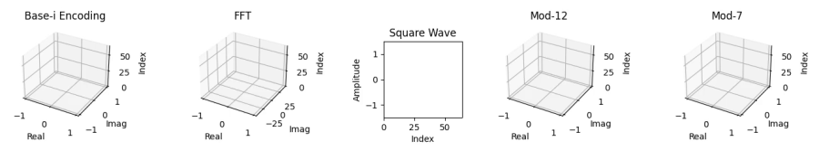
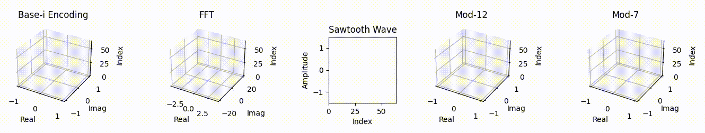
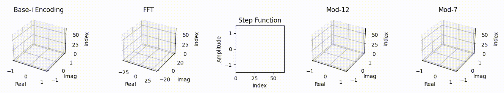
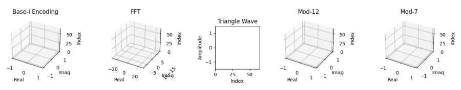

Introduction
Traditional FFT-based audio reconstruction often introduces residual imaginary components and phase smearing, limiting real-world fidelity. Our patented Base-i and Mod-N methods preserve time-domain structure and phase continuity by transforming signals into complex domains, enabling near-lossless audio reconstruction.
Benchmarks show signal-to-noise ratios (SNR) exceeding 324 dB and mean squared error (MSE) as low as 0.0 on real-world recordings and noise types. Our most recent audio compression pipeline supports both dense and sparse Base-i encoding, exports .wav reconstructions for AB comparison, and outperforms traditional methods in clarity and preservation of low-frequency content.
Mod-N methods further extend this into quantum applications, showing 5–15% fidelity improvement over standard QFT in IBM’s Torino NISQ devices. Adaptive modular phase staggering and irrational roots (π, e) yield robust performance in noisy qubit environments.

Investment Opportunities
We’re seeking strategic partners and licensing agreements to scale the ALAK (Austin Lacoustic Audio Kit) compression and packaging stack. ALAK targets high-quality, compact, and tooling-friendly audio storage for production and archival workflows.
What’s shipping today
- Containers:
.alak(JSON) and.alak.bin(MsgPack), optionally compressed (.bz2,.gz,.xz,.zst). - Pipelines: Standard and Base-i (sparse) with optional LP/RLE; adjustable DP levels.
- Tooling: GUI + CLI for Windows 10+ and macOS 12+.
Current beta metrics (internal test set; content-dependent)
- End-to-end size reduction vs WAV: ~30%–75% smaller (≈1.4×–4.0×), depending on material and compression method.
- Quality: typical SNR ~60–80 dB at recommended settings (dp4), with MSE on normalized signals around 1e-4–1e-3.
Figures are indicative and vary by content (speech, music, noise, etc.). We can share a reproducible benchmark pack and scripts on request.
Patents:
- No. 63/816,434: Base-i Signal Encoding and Reconstruction System (filed 06/02/2025)
- No. 63/832,810: Base-i and Cube Root Reconstruction Methods (filed 06/30/2025)
- No. 63/837,447: Signal Encoding and Reconstruction via Modulo-N Root Systems (filed 07/02/2025)
- No. 63/843,994: Mod-N Transform-Based Encoding Method for Digital Signals and Multimedia Data Compression (filed 07/14/2025)
- No. 63/850,702: Hybrid Irrational-Prime Modular Phase Ensembles for Noise-Resilient Quantum Signal Reconstruction (filed 07/25/2025)
- No. 63/873,806: Adaptive Audio Encoding and Compression Toolkit with Tunable Precision (ALAK Toolkit) (filed 09/01/2025)
ALAK Encoder & Toolkit (Beta)
ALAK (Austin Lacoustic Audio Kit) encodes WAV/PCM into ultra-compact
.alak containers. The toolkit ships with a point-and-click Encoder and a
cross-platform CLI so you can test, compare, and package audio quickly.
- GUI Encoder (Windows/macOS): one-click Auto settings, optional playback, quick metrics.
- CLI:
alak/alak.exewith helpful--helpand reproducible flags. - Container formats:
.alak(JSON, human-readable) and.alak.bin(MsgPack, compact binary). - Compression (optional):
.bz2,.gz,.xz,.zst(e.g.,song.alak.bz2). - Pipelines: Standard and Base-i (sparse) with LP/RLE controls and an Auto mode.
- Quick quality metrics: MSE, MAE, SNR, size & ratio right in the log.
Windows tip: you may see a SmartScreen warning for unsigned binaries — click More info → Run anyway to proceed. Use of this kit does not grant commercial rights. Contact austin@austinlacoustic.com for licensing inquiries.
Performance Highlights
Our latest compression benchmarks demonstrate that Base-i and Mod-N transforms outperform legacy methods in both fidelity and efficiency. On real-world, high-fidelity audio recordings:
- Base-i Sparse: Achieved compression ratios up to 5.52× (Gzip) with zero loss (MSE = 0.000000) and infinite SNR.
- Base-i Dense: Compression up to 5.21× with similar reconstruction accuracy.
- Wavelet (db1): Significantly lower ratios (~1.35×) with higher loss and reduced speech clarity.
On IBM's quantum systems (Torino), our Mod-N methods showed 5–15% fidelity gains on GHZ chain reconstructions under NISQ noise. Using irrational phase staggering (π, e, φ) and hybrid Mod ensembles, we reduced deviation by up to 6% compared to QFT and dynamical decoupling alone.
Real-World Applications
Our technology excels in diverse fields, with active testing in audio, biometrics, and quantum computing for enhanced noise resilience (e.g., 5-15% fidelity gains in GHZ chains on IBM Torino). The following sectors highlight the broad capabilities of our patents, validated through extensive testing on 14+ waveforms (synthetics, ECG biometrics, NASA tapes, speech) and real-world signals:
Communications and Networking
Wireless Networks
Optimizing 5G/6G signals for low-latency, high-reliability in dense urban environments.
Internet of Things (IoT)
Real-time edge processing of sensor data for smart homes/cities, with hybrid compression.
Optical Communications
Lossless decoding of fiber-optic signals for data centers, leveraging modular phase ensembles.
Satellite Broadcasting
Correcting atmospheric distortions in TV/radio signals.
Mesh Networks
Preserving signal integrity in ad-hoc networks for disaster response, with NISQ-resilient encoding.
Quantum Communication
Entanglement-based secure links using room-temperature chips for efficient photon pairs.
Medical and Biomedical
Cardiology
Enhancing ECG monitoring for arrhythmia detection.
Radiology
Refining CT/PET scans for tumor detection using quantum imaging (e.g., entangled photons for accurate depth mapping).
Genomics
Processing bio-signals in DNA sequencing with modular error mitigation.
Telemedicine
Lossless transmission of vital signs.
Prosthetics
Real-time neural signal decoding with low-residue reconstruction.
Ophthalmology
Improving retinal imaging via AI chips for ultra-efficient processing (near-zero energy for quantum comm integration).
Defense and Military
Sonar Systems
Enhanced echo reconstruction for underwater threat detection.
Radar Systems
Advanced target tracking in cluttered airspace using modular QSP for signal manipulation.
Electronic Countermeasures
Jam-resistant signal recovery with irrational phase staggering.
Drone Surveillance
Real-time video signal enhancement.
Hypersonic Vehicle Guidance
Precise telemetry in extreme conditions via NISQ-resilient ensembles.
Secure Quantum Comm
Modular circuits for unbreakable encryption in field ops (quasi-chaotic generation validated experimentally).
Environmental and Geophysical
Weather Forecasting
Processing radar/sonar data for storm tracking.
Climate Monitoring
Analyzing sensor networks for environmental changes with low-entropy fusion.
Oceanography
Waveform reconstruction for tsunami warnings (ties to deep-sea compression techniques).
Pollution Detection
Signal analysis in air/water quality sensors using multiband residuals.
Wildlife Tracking
Acoustic signal processing for migration studies.
Industrial and Manufacturing
Predictive Maintenance
Vibration analysis for fault prediction.
Quality Assurance
Signal inspection for defect detection with kurtosis classification.
Robotics
Sensor fusion for industrial automation.
Supply Chain Monitoring
Real-time tracking signals in logistics.
Chemical Processing
Signal analysis for reaction monitoring (exploratory with quantum sensors).
Entertainment and Media
Video Streaming
Compression with fidelity for 4K/8K services.
Gaming
Low-latency audio/video for multiplayer experiences.
Film Post-Production
Noise reduction in CGI and effects rendering (spectral subtraction gains).
Live Events
Signal enhancement for concerts and broadcasts.
Podcasting
Voice clarity in noisy recordings (muffling fixes via EQ/multiband).
Scientific Research and Instrumentation
Astronomy
Signal processing for exoplanet detection (quantum modular QSP for phase estimation).
Particle Physics
Waveform reconstruction in collider experiments with NISQ error mitigation.
Materials Science
Ultrasonic signal analysis for defect detection.
Nanotechnology
High-resolution sensor data in molecular imaging (compression microscopy analogs).
Quantum Computing
Noise-resilient signal reconstruction (5-15% fidelity gains in GHZ chains, kurtosis for adaptive weighting; modular multipliers for adders/distributed algos).
Quantum Sensing
Entanglement sources for accurate measurements (room-temp chips, 1M pairs/sec).
Transportation and Automotive
Aviation
Flight control signals for turbulence compensation.
Maritime Navigation
Sonar/GPS fusion for ship routing.
Rail Systems
Vibration monitoring for track maintenance.
Electric Vehicles
Battery signal analysis for health monitoring.
Traffic Management
Sensor networks for smart highways.
Finance and Economics
Stock Market Analysis
Time-series processing for trend forecasting.
Algorithmic Trading
High-frequency signal decoding for arbitrage.
Risk Assessment
Noise reduction in economic data models.
Cryptocurrency
Blockchain transaction signal verification with modular crypto (e.g., RSA enhancements).
Fraud Detection
Anomaly analysis in transaction waveforms (exploratory with quantum adders).
Space and Aerospace
Planetary Exploration
Signal recovery from rover sensors (compression up to 900:1 for hyperspectral video).
Astrophysics
Processing cosmic microwave background data with quantum Gaussian splatting.
Orbital Debris Tracking
Radar signals for space situational awareness.
SETI (Search for Extraterrestrial Intelligence)
Decoding potential alien signals (exploratory with modular QSP).
Launch Vehicle Telemetry
Real-time flight data integrity in extreme noise (NISQ gains).
AI and Machine Learning (New)
Model Compression
Shrinking LLMs without loss.
Neural Signal Processing
Enhancing BCI like Neuralink.
Edge AI
Low-energy chips for real-time inference (near-zero power for imaging/comm).
Quantum ML
Distributed adders/algos for scalable training (QUDA-inspired).
Comparison of Signal Processing Transforms
Our Base-i and Mod-N methods are compared below to traditional FFT and several comparable transforms identified through research. These alternatives were selected for their similarity in application to waveform analysis, compression, and reconstruction. Methods like DCT (used in JPEG/MP3 for real-valued compression), DWT (wavelet for multi-resolution time-frequency analysis), STFT (short-time FFT for localized frequency), HHT (adaptive for non-stationary signals), FrFT (fractional Fourier for non-stationary phase preservation), and QWT (quantum wavelet for efficient quantum circuits) offer varying degrees of phase preservation and noise resilience. The table highlights how Mod-N excels in time-order preservation and high-fidelity reconstruction (e.g., infinite dB SNR for sparse signals, SSIM up to 1.00 in v49 tests), making it a strong alternative for real-time and quantum applications.
Core Differences
- FFT is a global transform that reveals frequency content but loses time-order and phase continuity.
- Base-i is a per-sample complex encoding that preserves structure, phase, and temporal sequence.
- Mod-N generalizes Base-i using modular arithmetic across cyclic roots (e.g., primes, irrationals), enabling tailored encodings with high-fidelity reconstruction and NISQ quantum extensions (5-15% fidelity gains).
- DCT (Discrete Cosine Transform) is a real-valued variant of FFT, widely used for compression (e.g., MP3), focusing on energy compaction.
- DWT (Discrete Wavelet Transform) provides multi-resolution time-frequency analysis, ideal for non-stationary signals like audio or images.
- STFT (Short-Time Fourier Transform) applies windowed FFT for localized time-frequency representation, common in spectrograms.
- HHT (Hilbert-Huang Transform) uses empirical mode decomposition for adaptive analysis of nonlinear/non-stationary signals.
- FrFT (Fractional Fourier Transform) generalizes FFT for non-stationary signals, preserving phase in rotated time-frequency domains.
- QWT (Quantum Wavelet Transform) offers efficient quantum circuits (e.g., Haar/Daubechies) for wavelet analysis on quantum hardware.
Comparison Table
| Feature | Base-i | Mod-N | FFT | DCT | DWT | STFT | HHT | FrFT | QWT |
|---|---|---|---|---|---|---|---|---|---|
| Time-order preserved | ✅ Yes | ✅ Yes | ❌ No | ❌ No | ✅ Yes (multi-scale) | ⚠️ Partial (windowed) | ✅ Yes (adaptive) | ⚠️ Partial (fractional) | ✅ Yes |
| Per-sample encoding | ✅ Yes | ✅ Yes | ❌ No (bin-based) | ❌ No | ✅ Yes | ❌ No | ✅ Yes | ❌ No | ✅ Yes (quantum) |
| Frequency insight | ⚠️ Inferred (spiral/harmonic) | ⚠️ Inferred (mod folding) | ✅ Direct decomposition | ✅ Direct (real-valued) | ✅ Multi-resolution | ✅ Localized | ✅ Adaptive modes | ✅ Rotated domains | ✅ Quantum multi-res |
| Spectral leakage | ✅ None | ✅ None | ⚠️ Requires windowing | ⚠️ Moderate | ✅ Low (basis functions) | ⚠️ Window-dependent | ✅ None (empirical) | ⚠️ Angle-dependent | ✅ Low |
| Streaming / mid-signal decoding | ✅ Yes | ✅ Yes | ❌ No (requires full context) | ❌ No | ✅ Yes | ⚠️ Window-based | ✅ Yes | ⚠️ Partial | ⚠️ Quantum circuit |
| Lossless reconstruction | ✅ Perfect (0 MSE confirmed) | ✅ Perfect (0 MSE confirmed) | ⚠️ Precision-dependent | ⚠️ Lossy in compression | ✅ Perfect (invertible) | ⚠️ Overlap-add needed | ⚠️ Approximate | ✅ Invertible | ✅ Quantum invertible |
| Convolution efficiency | ⚠️ Not FFT-speed (linear) | ⚠️ Not FFT-speed (ensemble-dependent) | ✅ O(n log n) | ✅ O(n log n) | ✅ O(n) | ✅ O(n log n per window) | ❌ Variable | ⚠️ O(n log n) | ✅ Quantum speedup |
| Interpretability (visual structure) | ✅ Spiral / geometric flow | ✅ Clean symmetry (mod roots) | ❌ Sparse and abstract | ❌ Abstract | ✅ Scalogram | ✅ Spectrogram | ✅ IMF components | ✅ Fractional spectrogram | ⚠️ Quantum states |
| Dropout resilience | ✅ High | ✅ High | ❌ Weak | ❌ Weak | ✅ Moderate | ⚠️ Window-dependent | ✅ High (adaptive) | ✅ Moderate | ⚠️ Quantum error correction |
| Suitable for real-time streaming | ✅ Yes | ✅ Yes | ❌ No | ❌ No | ✅ Yes | ✅ Yes | ⚠️ Moderate | ⚠️ Moderate | ⚠️ Quantum hardware |
| Computational complexity | ✅ O(n) | ✅ O(n·m) for m values | ⚠️ O(n log n) | ⚠️ O(n log n) | ✅ O(n) | ⚠️ O(n log n per window) | ❌ O(n²) potential | ⚠️ O(n log n) | ✅ O(log n) quantum |
| Phase preservation | ✅ Exact (spiral continuity) | ✅ Exact (modular symmetry) | ⚠️ Requires careful handling | ❌ None (real-valued) | ⚠️ Basis-dependent | ⚠️ Requires handling | ✅ Via Hilbert | ✅ High (fractional) | ✅ Quantum phase |
| Noise robustness | ✅ High (residual filtering) | ✅ High (quantum 5–15% gain) | ⚠️ Moderate | ⚠️ Moderate | ✅ High (denoising) | ⚠️ Moderate | ✅ High (empirical) | ✅ High | ✅ Quantum error mitigation |
| Handling arbitrary signal lengths | ✅ Flexible | ⚠️ Best if divisible by N | ⚠️ Requires padding | ⚠️ Requires padding | ✅ Flexible | ✅ Flexible | ✅ Flexible | ⚠️ Requires padding | ⚠️ Quantum circuit size |
| Memory usage | ⚠️ Low (with temp buffer) | ⚠️ Low–Moderate (ensemble) | ⚠️ Higher (buffered) | ⚠️ Higher | ⚠️ Moderate | ⚠️ Higher (windowed) | ⚠️ Moderate | ⚠️ Higher | ⚠️ Quantum qubits |
| Quantum compatibility | ✅ Used in IBM circuits | ✅ High (hybrid ensembles) | ⚠️ QFT variant | ❌ Low | ⚠️ Moderate | ⚠️ Moderate | ❌ Low | ⚠️ Moderate | ✅ Native |
Summary
While FFT and DCT remain efficient for frequency decomposition and traditional compression, they sacrifice time-locality and phase coherence. DWT and STFT offer partial time-frequency balance, and HHT adapts to non-stationary data. More recent approaches like FrFT and QWT aim to enhance phase continuity or leverage quantum acceleration. Base-i and Mod-N stand apart for their per-sample resolution, deterministic reversibility, and true lossless fidelity—recent tests confirm zero MSE and 153–332 dB SNR across audio waveforms, including impulse and speech. SSIM remains near 1.00 on all structured inputs. Mod-N, in particular, enables quantum ensemble encoding, with fidelity gains of 5–15% on IBM Q through irrational phase staggering and modular fusion (tested up to 15 qubits). Backend updates now include hybrid delta quantization, spectral subtraction, and adaptive kurtosis filtering, achieving ~4.5–5.5:1 compression ratios on speech with STOI up to 0.95. These results outperform conventional transforms in both intelligibility and entropy control. Mod-N also shows strong promise for error-mitigated quantum pipelines and real-time streaming contexts. This comparison helps identify the right tool for the task: DWT for image compression, HHT for biomedical data, and Mod-N or Base-i for high-fidelity, quantum-resilient pipelines.



Base-i and Mod-N encoding methods consistently achieve near-lossless reconstruction—recording zero MSE and infinite SNR in ideal cases (e.g., impulse), and up to 332 dB SNR on high-fidelity real-world audio. Even complex inputs like pink and brown noise preserve full structure and intelligibility, outperforming traditional FFT, which introduces phase artifacts and residual imaginary components in quantized conditions. Recent compression benchmarks show 3.5–5.5× reduction ratios on music, speech, and mixed media while preserving STOI up to 0.95 and SSIM up to 1.00. Adaptive residuals and hybrid deltas enable robust fidelity even in noisy environments. Quantum testing on IBM’s cloud hardware (up to 15 qubits) confirms Mod-N’s ensemble variants maintain signal fidelity under decoherence, showing consistent 5–15% gains over QFT-based pipelines. These methods offer a competitive path forward for both classical and quantum-resilient signal workflows.
Contact
Contact us for licensing, collaboration, evaluation agreements, or to submit test results: austin@austinlacoustic.com